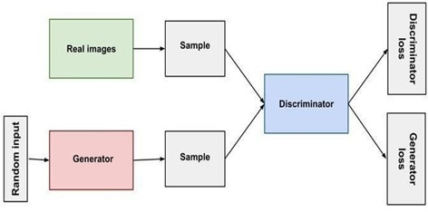

Variational Autoencoders(VAEs) - Existing Methodology - 1
VAEs are deep learning models used for generating diverse and
realistic medical images. They work by encoding input data into a
latent space and reconstructing it using a decoder while ensuring
the latent space follows a predefined probability distribution,
typically Gaussian. This allows VAEs to learn meaningful patterns
from medical imaging datasets like MRI scans or X-rays. VAEs are
particularly beneficial for tasks requiring structured and coherent
image generation, making them ideal for maintaining anatomical
accuracy in medical images. However, they may produce blurrier
outputs compared to Generative Adversarial Networks (GANs), which
offer higher fidelity but less interpretability. Despite this, VAEs
remain valuable for medical applications where smoothness,
consistency, and meaningful latent representations are crucial.
Convolutional Neural Networks(CNNs) - Existing Methodology - 2
CNNs are widely used in medical image generation, particularly in
tasks such as image synthesis, enhancement, and reconstruction. CNNs
learn spatial hierarchies from images, making them effective for
capturing structural details in medical imaging applications like
MRI, CT scans, and X-rays.
Proposed Methodology
Generative Adversarial Networks (GANs) are a class of artificial
intelligence models introduced by Ian Goodfellow and his colleagues
in 2014. They consist of two neural networks: the generator and the
discriminator, which are trained simultaneously through an
adversarial process.
-
Generator : The generator's role is to generate synthetic
data that resembles the real data it was trained on. It takes
random noise or a latent input as its initial input and transforms
it into a sample that ideally cannot be distinguished from real
data by the discriminator. Initially, the generator produces
random noise, but as training progresses, it learns to generate
increasingly realistic samples through backpropagation and
gradient descent, optimizing its parameters to minimize the
difference between generated and real data.
-
Discriminator : The discriminator acts as a binary
classifier, distinguishing between real and fake data. It is
trained on a dataset containing real samples and samples generated
by the generator. The discriminator's objective is to correctly
classify real data as real and generated data as fake. Like the
generator, the discriminator's parameters are optimized through
backpropagation and gradient descent to improve its ability to
differentiate between real and fake samples.

Figure: Architecture Of Generative Adversarial Network
The training process of GANs involves a continual interplay between
the generator and the discriminator:
Training Phase:
-
Initially, the generator produces fake data from random noise, and
the discriminator is trained on both real and fake data, learning
to distinguish between them.
-
The discriminator provides feedback to the generator by indicating
how well it is generating realistic samples.
-
The generator adjusts its parameters to produce samples that are
more likely to fool the discriminator, thus improving its ability
to generate realistic data.
-
This adversarial process continues iteratively, with both networks
updating their parameters in opposing directions, until a point of
equilibrium is reached where the generator produces data that is
indistinguishable from real data.
Convergence:
-
Ideally, when GANs converge, the generator generates data that is
indistinguishable from real data, and the discriminator is no
longer able to differentiate between real and fake samples with
high confidence.
-
However, achieving convergence can be challenging and is
influenced by factors such as network architecture, training data
quality, and hyperparameters.
-
Once trained, the generator can be used independently to produce
realistic synthetic data, which can have various applications such
as image synthesis, data augmentation, and anomaly detection.
Overall, GANs leverage the adversarial relationship between the
generator and discriminator to learn the underlying distribution of
the training data and generate new samples that closely resemble
real data. Generative Adversarial Networks (GANs) represent a
cutting-edge approach to data augmentation and synthesis in machine
learning tasks, including medical image analysis for kidney
diagnostics. GANs consist of two neural networks, a generator and a
discriminator, which are trained simultaneously through an
adversarial process. The generator synthesizes new data samples,
while the discriminator distinguishes between real and fake samples.
This iterative training process encourages the generator to produce
increasingly realistic data, ultimately generating novel instances
that closely resemble real examples.